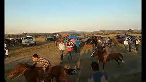
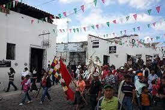

Turismo Aculco
Aculco que en Náhuatl significa "Donde el agua tuerce"
Este Pueblo Mágico reside entre montañas, peñas y cascadas, donde el sol inunda de luz calles, callejones y refleja su luz en sus blancas paredes. Así comienza cada día el verdadero Aculco, ven a encontrarte con Otomíes, y descubrir porque escogieron este lugar
Ubicacion:
Aniversario de la Fundación de Aculco
- En el pueblo Mágico Aculco de Espinoza se realizan diversas fiestas tradicionales, entre ellas el Aniversario de la Fundación de Aculco el 19 de febrero. En los meses de marzo y abril, en tiempos de Semana Santa se inician celebraciones en honor al Señor Nenthé con mucha fe y devoción por parte de sus habitantes.
Volver al indice 

Día de la Fraternidad Aculquense
- El 17 de septiembre se celebra el Día de la Fraternidad Aculquense donde sus habitantes se reúnen a disfrutar de un día de campo con diferentes actividades como carreras de caballos en el sitio de El Carril, o competencias entre ellos, en compañía de su tradicional gastronomía.
Volver al indice 

Fiestas Patronales
- Unas de las fiestas más resaltantes, son las patronales, en honor a San Jerónimo el 30 de septiembre organizando ferias regionales, donde se exponen sus danzas tradicionales de santiagueros y concheros, asimismo su magnífica gastronomía y creaciones artesanales.
Volver al indice 

Feria del Queso
- Ante este auge las autoridades municipales estiman que existen poco más de 200 productores y productoras; elaborando entre 25 y 28 toneladas de distintos tipos cada mes, que se distribuyen sobre todo en estados del centro del país. Gómez Escobar señaló que en el municipio se procesan aproximadamente 150 mil litros de leche
- La amplia variedad va desde manchego con jalapeño, natural o con epazote, adobado, ranchero, manchego con ajo, tipo Oaxaca, manchego con nuez, piñón o chipotle, ahumado tipo provolone o asadero, de morral y panela.
- Actualmente distintos talleres se han enfocado en la elaboración de una bebida energética y otros una cerveza artesana.
- “Se hace a base de suero, se tiene que endulzar y se le ponen sabores como piña; es deliciosa y pocas veces hay porque de la fábrica se va directo a la entrega; también no hay mucha producción de ese suero, pero lo que sale se vende”, finaliza.
Volver al indice